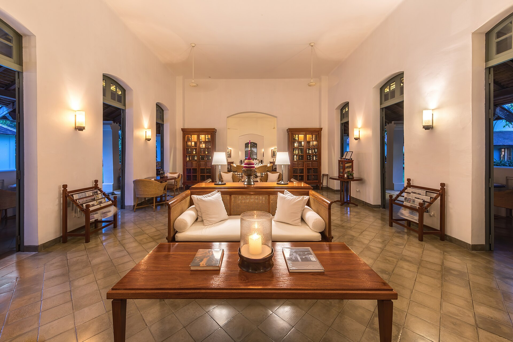
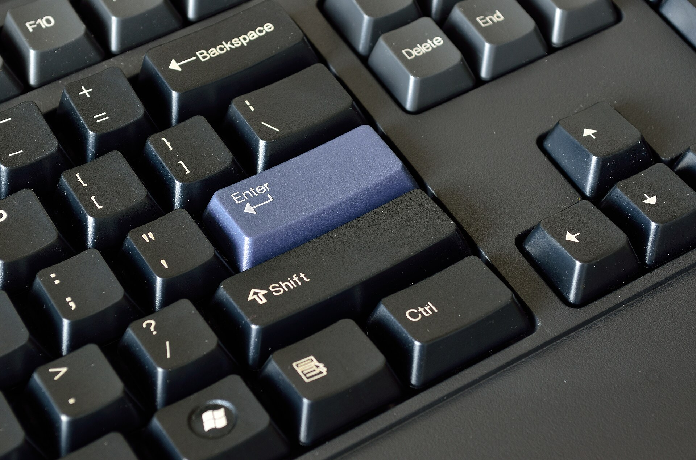
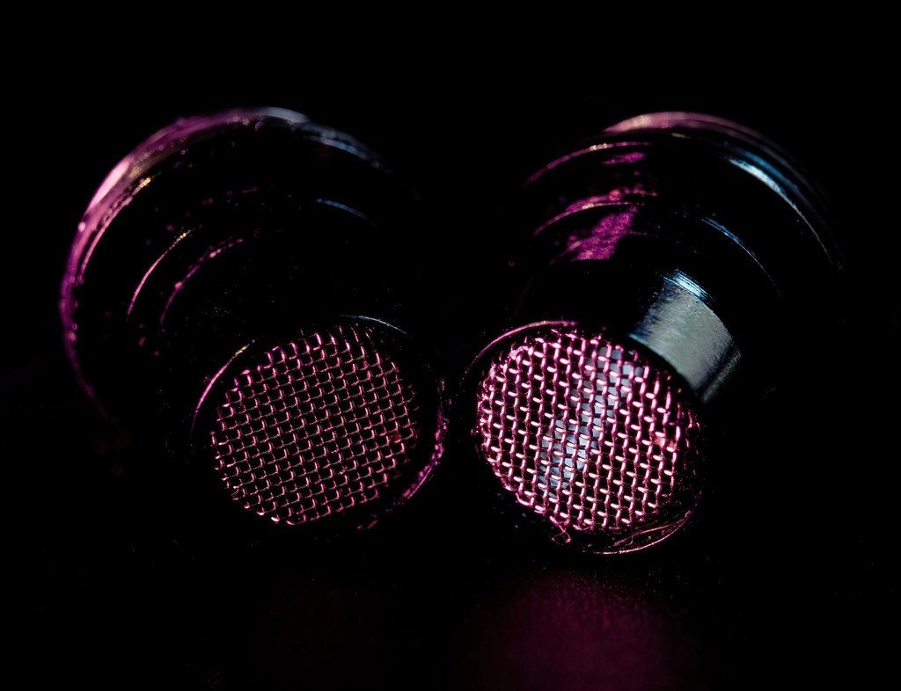
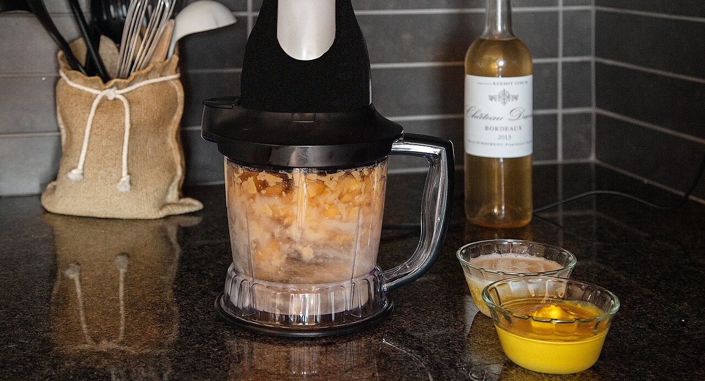

POV: EVERYTHING HERE CAME OUT OF THE GROUND
Pick it. Unpack it. All the way down.
Every object on this desk is a supply chain wearing a costume. 210 processes, traced to 13 grounds.
SWIPE TO SEE 319 OBJECTS210 PROCESSES
MILLENNIAL CTA: START BELOW ↓

Nº01
Every keycap here was crude oil last year.
Thirteen processes sit between a wellhead and the ABS keycaps under your fingers.
13 PROCESSESENDS IN A WELLPRESS 1 TO OPEN

Nº12
That's two computers, one per ear.
Each bud: a Bluetooth SoC, a lithium cell, a magnet smaller than a lentil. We trace all 15 steps.
15 PROCESSESENDS IN A COPPER PIT

Nº18
A data center that fits on your keyring.
No moving parts: sand melted into silicon wafers, stacked 170 layers deep.
12 PROCESSESENDS IN A BAUXITE PIT

Nº17 · AND 15 MORE
The blade? Poplawski, 1922.
Same spinning principle, shrunk into a bottle. The other 15 objects are waiting.
OPEN THE WHOLE ROOM
START THE DESCENT ↓